Hello again to welcome to the third issue of the Wizard Fella Islands newsletter!!!
There's a bunch of new things to show so I'll get straight into it.
I will start out with Big Dreams as usual, however in comparising to last month this one might be dissapointing. As mentioned in the last issue, the second part is a level where you have a limited amount of time to complete it.
Here is how it looks like so far...
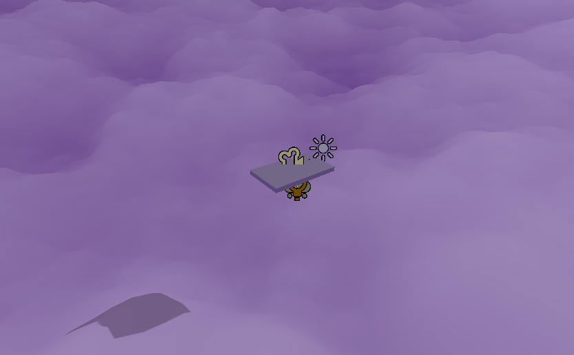
The state of the level right now
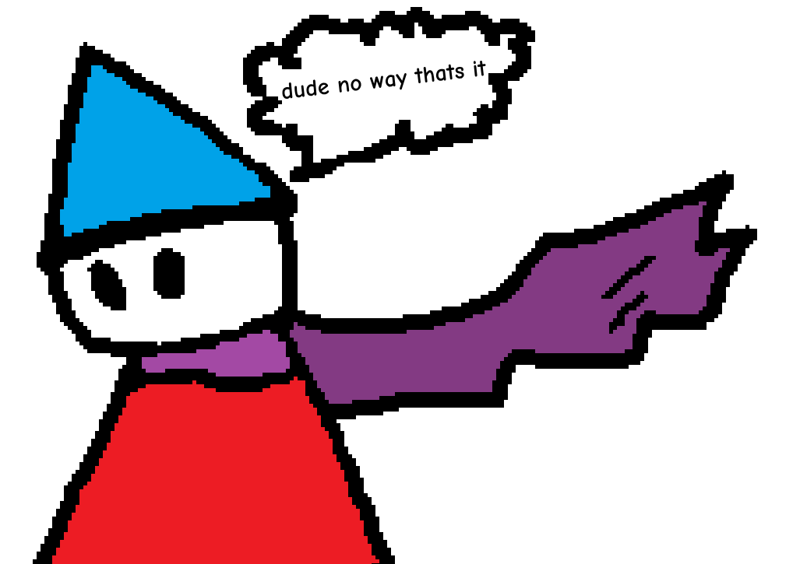
Sadly that is actually it for the level because I spent time on other things instead.
I did make an intro for it though.
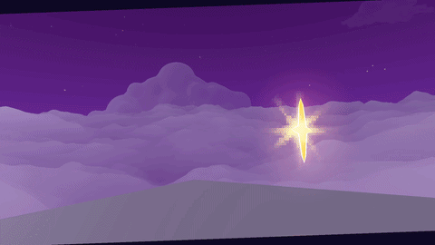
The intro to the level
Over the next month I want to actually commit to working on the layout of this part instead of making more features for it.
And speaking of features here's...
I made a timer dispay specifically for the Big Dreams part 2, but I can already think of a few more uses for it.
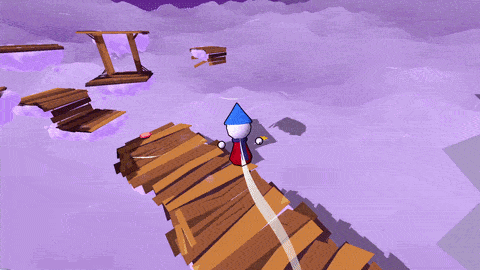
Timer in action
The timer text changes color and the bar cracks at 50% and 20% to hopefully make you more aware that time is running out.
Probably the most exciting thing I worked on this month is The Diary. After first mentioning it in the first issue it is now done*

The Diary in action
The Diary serves as the pause and settings menu but also as a way for you to check your progress
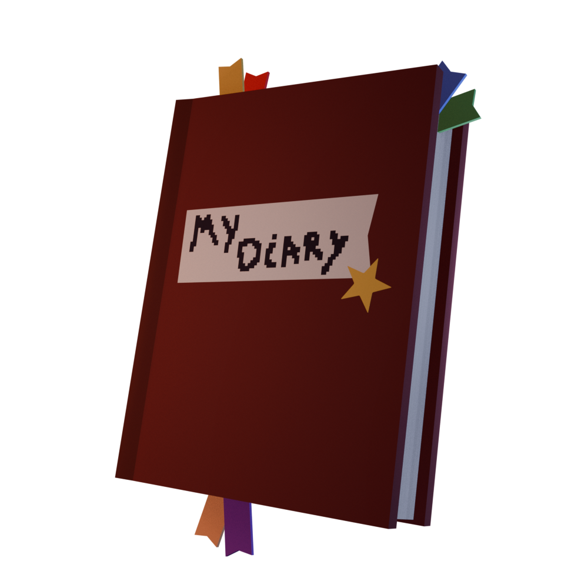
Render of The Diary
It will update as you play through the game with new pages for the places you visit and thingys you find! A thing I think deserves a mention is that The Diary is navigatable with a controller aswell. That doesnt't sound like a huge achievement but I did have to change a lot of stuff for it to work.
*When I say done I mean that most features are made for it and all that's left is to fill it with content :)
oh and also i need to make the "remap controls" button do something
Stars are collectibles similar to coins in most other games and will be spendable on things like cosmetics.
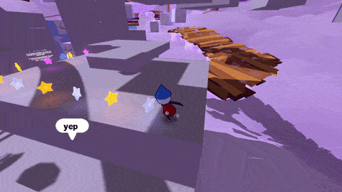
Collecting some stars
I think they can also help with level design by making paths out of them to guide the player.
(I probably heard this in some video 3 years ago)
Moving Platforms just move based on the specified path and could be used to make some fun platforming challenges.
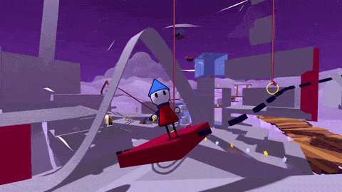
Moving platforms in action
Charge Pads are a new prop very similar to normal Bounce Pads.
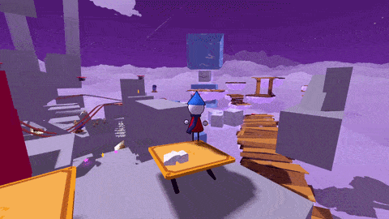
Testing out Charge Pads
Unlike bounce pads though, you need to stand on them for a bit and it will launch you based on your position from the center of the pad. They do feel a little unintuitive right now, so I'll try to think of ways to improve on them.
Dialogue
There is now finally the option to have dialogue choices.
It's something that I've put off for a while but finally decided to make because I realised that it was needed for Big Dreams part 2.
Like the Diary, these can also be navigated without the use of a mouse.
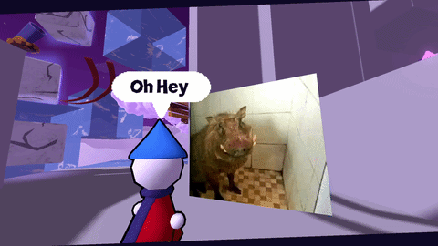
Dialogue choice example
There is also support for dialogue with multiple characters. Up until now, dialogue was only ever betweeen two characters, one of which would be the player. But now I can make dialogue with as many characters as I want.
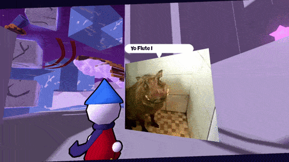
Multiple character dialogue showcase
UI
I added small things like the Level Title and Cinematic bars. In my opinion they make the game feel more polished.
The Level Title displays the name of the island you are, name of the part and number of the part.
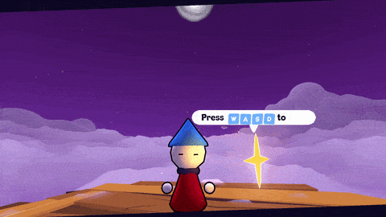
Level Info on Big Dreams part 1
The cinematic bars are just black bars that appear during dialogues and cutscenes.
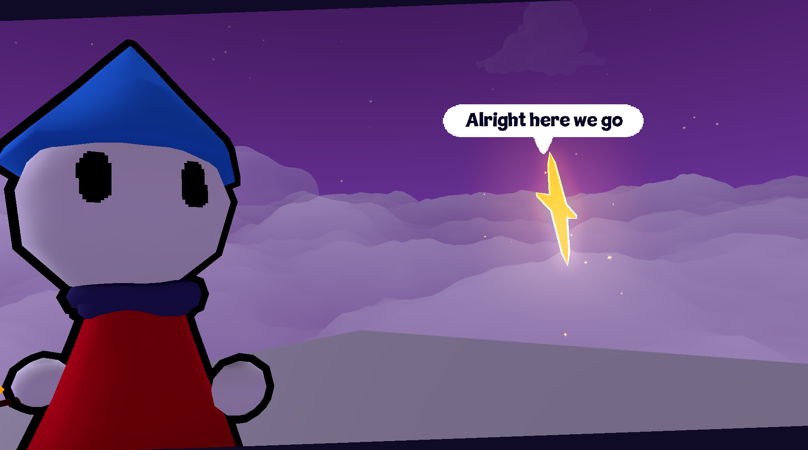
Cinematic bars on Big Dreams part 2 intro
That's it for this month! Hopefully I will have a bunch more stuff to show next month
but I might be a bit busy with studying as exams get closer.
Thank you for reading and until next time!!!
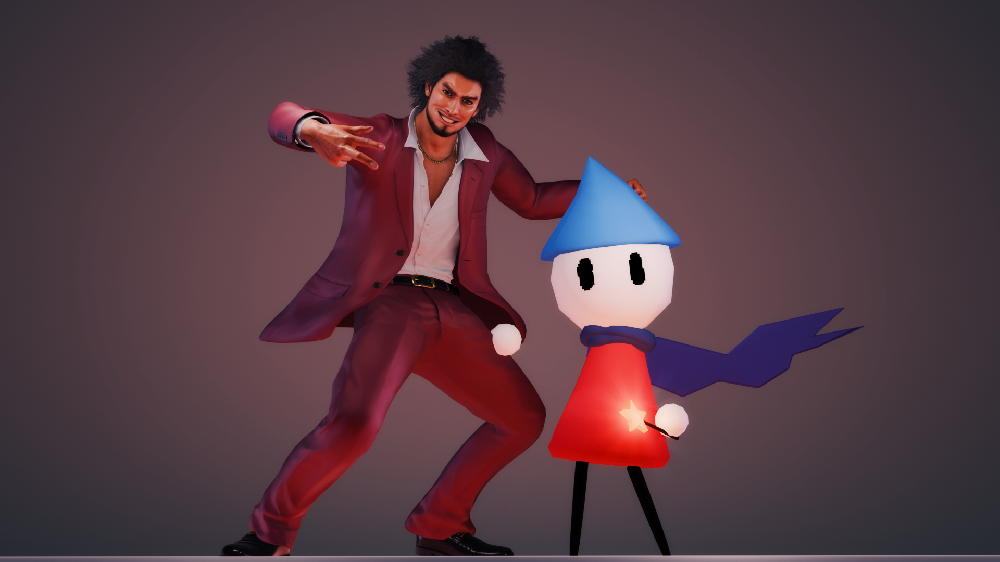
"Met this guy today. He seems pretty cool" - Flute